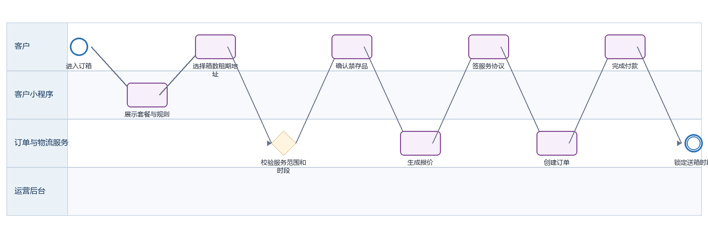
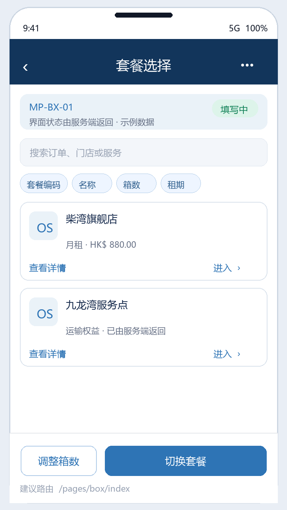
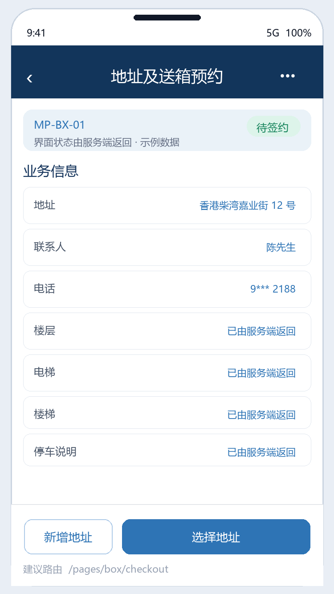
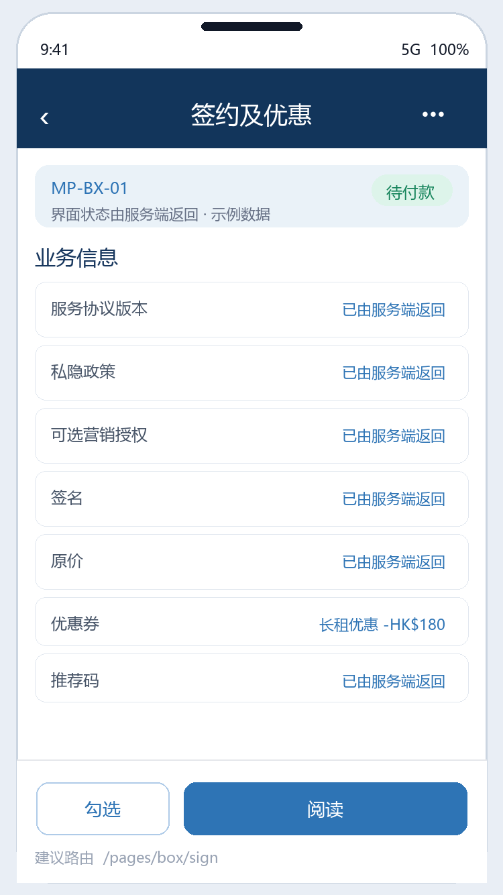
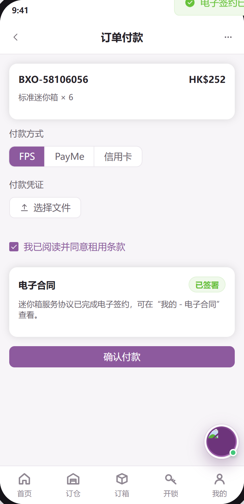

迷你箱下单 PRD
下载 Word 文档迷你箱下单 PRD
客户小程序研发详细需求规格 · V2.0 · 2026-09-08
定义客户选择迷你箱套餐、箱数和租期，确认地址与送箱时段、签署服务协议、付款并进入首次履约的完整规格。
| 属性 | 内容 |
|---|---|
| 文档编号 | MP-BX-01 |
| 适用端 | 客户小程序、运营后台、工单小程序及领域服务 |
| 范围 | 套餐、数量、租期、地址、送箱预约、禁存品确认、报价、合同、优惠、付款、订单创建。 |
| 不在本模块范围 | 套餐后台配置、车队排班算法和仓库库位分配。 |
1 目标与边界
1.1 本期范围
套餐、数量、租期、地址、送箱预约、禁存品确认、报价、合同、优惠、付款、订单创建。
1.2 不在本模块范围
套餐后台配置、车队排班算法和仓库库位分配。
1.3 角色与系统责任
| 角色或系统 | 职责 |
|---|---|
| 客户 | 浏览、选择、签约、付款、提交申请、查询进度 |
| 客户小程序 | 采集意图并展示服务端状态，不自行决定价格、库存、资格或审批结果 |
| 运营后台 | 维护主数据、价格、库存、可操作项、审批、异常处理和人工改派 |
| 工单小程序 | 承接送取、验收、搬仓、清仓等线下任务，回传节点、附件和异常 |
| 领域服务 | 保存订单、租约、箱体、预约、支付与合同的权威状态并发布事件 |
2 BPMN 业务流程

圆形表示开始或结束事件，圆角矩形表示任务，菱形表示服务端判断。
跨端节点必须先写入领域服务，再由事件刷新客户侧时间线。
3 状态机与准入
| 状态码 | 客户文案 | 进入条件 | 下一步 |
|---|---|---|---|
| 填写中 | 填写中 | 尚未创建订单 | 提交签约 |
| 待签约 | 待签约 | 资料与报价已确认 | 签署 |
| 待付款 | 待付款 | 合同已签署 | 支付 |
| 已付款 | 已付款 | 等待送箱排程 | 转待安排送箱 |
| 待安排送箱 | 待安排送箱 | 时段已锁定 | 进入首次履约 |
| 已取消 | 已取消 | 未进入配送或按规则取消 | 终态 |
状态码是跨端契约，中文文案不得作为业务判断条件；写操作必须携带聚合版本并处理409冲突。
4 页面与交互
本节截图直接取自迷你仓小程序可交互原型的实际页面，不使用根据字段自行生成的示例图；业务权威值仍以服务端返回为准。
4.1 套餐选择
| 属性 | 要求 |
|---|---|
| 建议路由 | /pages/box/index |
| 入口 | 首页订箱、底部订箱、再次订购 |
| 页面字段 | 套餐编码/名称、箱数、租期、月租、运输权益、押金、推荐标签、适用地区 |
| 主要操作 | 切换套餐、调整箱数、查看尺寸与规则 |
| 通用状态 | 骨架屏、空态、无网络、超时、无权限、数据已变化、提交中、提交成功和提交失败分别实现 |

4.2 地址与送箱预约
| 属性 | 要求 |
|---|---|
| 建议路由 | /pages/box/checkout |
| 入口 | 选择套餐 |
| 页面字段 | 地址、联系人、电话、楼层、电梯/楼梯、停车说明、预约日期/时段、搬运说明、禁存品确认 |
| 主要操作 | 选择地址、新增地址、校验服务范围、选择有容量时段 |
| 通用状态 | 骨架屏、空态、无网络、超时、无权限、数据已变化、提交中、提交成功和提交失败分别实现 |

4.3 签约与优惠
| 属性 | 要求 |
|---|---|
| 建议路由 | /pages/box/sign |
| 入口 | 预约校验通过 |
| 页面字段 | 服务协议版本、私隐政策、可选营销授权、签名、原价、优惠券、推荐码、应付 |
| 主要操作 | 阅读、勾选、签名、选择优惠；必选协议未同意不可提交 |
| 通用状态 | 骨架屏、空态、无网络、超时、无权限、数据已变化、提交中、提交成功和提交失败分别实现 |

4.4 支付结果
| 属性 | 要求 |
|---|---|
| 建议路由 | /pages/pay/index |
| 入口 | 订单已创建 |
| 页面字段 | 迷你箱订单号、箱数、送箱预约、应付、支付状态 |
| 主要操作 | 付款、失败重试、取消、查看订单 |
| 通用状态 | 骨架屏、空态、无网络、超时、无权限、数据已变化、提交中、提交成功和提交失败分别实现 |

5 业务规则
套餐、可售箱数、租期、运输权益、押金和服务地区由后台返回；客户端不得硬编码。
送箱预约必须校验地址服务范围、每日容量、楼层和特殊搬运限制；锁定时段与创建订单使用同一幂等请求。
必须确认禁存品说明；后台保存版本、确认时间和客户身份。
签约必须早于付款；合同和订单保存地址快照，后续修改地址库不回写历史订单。
优惠券与推荐码互斥；运输权益要作为 订单权益 快照保存，不能随套餐后台变更。
付款成功才进入待安排送箱；支付失败不占用长期排程容量，超时释放时段。
待签约、待付款、待安排送箱三个状态允许按取消规则申请取消；是否退款以支付事实为准。
6 接口契约
| 方法 | 接口 | 用途 | 幂等要求 |
|---|---|---|---|
| GET | /box/bundles | 查询可售套餐和权益 | 否 |
| POST | /box/serviceability/check | 校验地址与搬运限制 | 是，requestId |
| GET | /appointments/slots?type=delivery | 查询送箱容量 | 否 |
| POST | /pricing/box/quote | 计算箱数、租期和优惠 | 是，requestId |
| POST | /orders/box | 创建迷你箱订单和预约 | 是，clientRequestId |
| POST | /contracts/{orderId}/sign | 签署迷你箱协议 | 是，signatureRequestId |
通用响应包含code、message、data、traceId和serverTime。
金额使用整数最小货币单位；写接口校验登录身份、资源归属、幂等键和聚合版本。
错误码区分参数、资格、并发、锁定、支付确认、权限和服务不可用。
7 跨端交互和数据一致性
| 方向 | 规则 |
|---|---|
| 小程序到后台 | 只调用BFF或领域服务；后台通过同一业务编号处理。 |
| 后台到小程序 | 后台写领域状态并发布事件，小程序刷新权威状态。 |
| 后台到工单小程序 | 线下任务携带工单编号、订单编号、SLA和附件要求。 |
| 工单到客户小程序 | 扫码、附件和异常先回传领域服务，再生成客户可见时间线。 |
| 消息通知 | 只携带业务编号与深链，不下发敏感合同或门禁凭证。 |
7.1 领域事件
迷你箱报价已生成事件
迷你箱合同已签署事件
迷你箱订单已创建事件
迷你箱付款已确认事件
送箱时段已保留事件
8 异常与恢复
| 场景 | 识别条件 | 客户侧与后台处理 |
|---|---|---|
| 地址不可服务 | 超范围或楼梯限制 | 给出可服务原因和人工咨询入口 |
| 时段被抢占 | 容量版本冲突 | 刷新可选时段并保留其他表单 |
| 优惠失效 | 结算时资格变化 | 展示新金额并要求再次确认 |
| 付款成功预约锁定失败 | 跨服务异常 | 订单显示排程确认中并生成运营异常任务 |
9 非功能与安全
列表首屏P95不超过2秒，详情P95不超过1.5秒；长流程返回受理结果和异步进度。
敏感字段最小化展示，日志脱敏，下载资产使用短时签名URL。
所有状态变更记录前后值、操作者、来源端、原因码、时间和链路追踪编号。
支持简体中文、繁体中文、英文；日期、货币和地址按香港业务规范展示。
10 埋点与指标
| 事件 | 触发 | 关键属性 |
|---|---|---|
| 页面浏览 | 进入页面 | 页面标识、来源、订单编号、业务类型 |
| 点击操作 | 点击主要操作 | 操作类型、状态类型、订单版本 |
| 提交结果 | 写操作完成 | 请求编号、处理结果、错误类型、耗时毫秒数、链路追踪编号 |
| 流程节点变化 | 业务节点变化 | 变更前状态、变更后状态、事件编号、操作方类型 |
11 验收标准
AC-01 登录后恢复套餐、箱数、地址和时段。
AC-02 历史订单保留套餐权益与地址快照。
AC-03 重复提交只创建一张订单和一个预约。
AC-04 未签协议不能进入支付。
AC-05 支付成功后订单状态和预约容量在服务端最终一致。
12 研发交付清单
| 角色 | 交付物 |
|---|---|
| 产品与设计 | 页面状态稿、字段字典、三语文案和验收用例 |
| 小程序前端 | 页面、组件、登录恢复、状态处理、埋点和错误恢复 |
| 后端 | OpenAPI、状态机、幂等、权限、事件、补偿和审计 |
| 运营后台 | 配置、审批、异常处理、重试和人工兜底 |
| 工单小程序 | 任务、扫码、附件、节点回传和异常上报 |
| 测试 | 端到端、并发、权限、弱网、重复事件和补偿验证 |